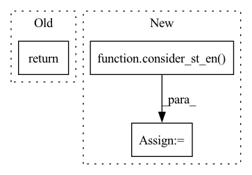

Pattern ID :14922
Before Change
self.save_or_show(save=save, fname=f"input_{prefix}_{st}_{en}", where="data")
else:
self.plot_df_with_freq(sub_df, freq, save, prefix=f"{prefix}_{st}_{en}", **kwargs)
return
def plot_df_with_freq(self, df:pd.DataFrame, freq:str, save:bool=True, prefix:str="", **kwargs):
Plots a dataframe which has data as time-series and its index is pd.DatetimeIndex
After Change
cols = list(df.columns)
df = df[cols]
df = consider_st_en( df, st, en)
if df.shape[1] <= max_subplots:
if freq is None:In pattern: SUPERPATTERN
Frequency: 6
Non-data size: 3
Instances Fragment ID: 49794622
Project Name: atrcheema/dl4seq
Commit Name: 67318e5cf0131b2e0c3cd12ebd2a128bed581370
Time: 2021-09-14
Author: ather_abbas786@yahoo.com
File Name: ai4water/eda/_eda.py
M Class Name: EDA
N Class Name: EDA
M Method Name: plot_df(12)
N Method Name: plot_df(10)
M Parent Class: Plot
N Parent Class: Plot
M File Name: ai4water/eda/_eda.py
N File Name: ai4water/eda/_eda.py
M Start Line: 394
M End Line: 394
N Start Line: 354
N End Line: 422
Before Change
st, en = tot_plots[i], tot_plots[i + 1]
sub_df = data.iloc[:, st:en]
self._grouped_scatter_plot(sub_df, name=f"grouped_scatter_{prefix}_{st}_{en}", **kwargs)
return
def _grouped_scatter_plot(self, df, save=True, name="grouped_scatter", **kwargs):
plt.close("all")
sns.set()After Change
data = data.copy()
data = consider_st_en( data, st, en)
if data.shape[1] <= max_subplots:
self._grouped_scatter_plot(data, save=save,name=f"grouped_scatter_{prefix}", **kwargs)
else: Fragment ID: 49794621
Project Name: atrcheema/dl4seq
Commit Name: 67318e5cf0131b2e0c3cd12ebd2a128bed581370
Time: 2021-09-14
Author: ather_abbas786@yahoo.com
File Name: ai4water/eda/_eda.py
M Class Name: EDA
N Class Name: EDA
M Method Name: grouped_scatter_plot_df(7)
N Method Name: grouped_scatter_plot_df(5)
M Parent Class: Plot
N Parent Class: Plot
M File Name: ai4water/eda/_eda.py
N File Name: ai4water/eda/_eda.py
M Start Line: 630
M End Line: 630
N Start Line: 675
N End Line: 692
Before Change
fontsize="11",
)
self.save_or_show(save=save, fname=fname+"_missing_vals", where="data", dpi=500)
return
def plot_data(self, save=True, freq=None, cols=None, max_subplots=10, **kwargs):
After Change
cols = data.columns
data = data[cols]
data = consider_st_en( data, st, en)
// Identify missing values
mv_total, mv_rows, mv_cols, _, mv_cols_ratio = _missing_vals(data).values()
Fragment ID: 49794620
Project Name: atrcheema/dl4seq
Commit Name: 67318e5cf0131b2e0c3cd12ebd2a128bed581370
Time: 2021-09-14
Author: ather_abbas786@yahoo.com
File Name: ai4water/eda/_eda.py
M Class Name: EDA
N Class Name: EDA
M Method Name: plot_missing_df(7)
N Method Name: plot_missing_df(5)
M Parent Class: Plot
N Parent Class: Plot
M File Name: ai4water/eda/_eda.py
N File Name: ai4water/eda/_eda.py
M Start Line: 298
M End Line: 298
N Start Line: 244
N End Line: 316
Before Change
ax = sns.heatmap(corr, center=0, fmt=".2f", ax=ax, **_kwargs)
ax.set(frame_on=True)
self.save_or_show(save, fname=f"{split if split else ""}_feature_corr_{prefix}", where="data")
return
def plot_pcs(self, num_pcs=None, save=True, save_as_csv=False, figsize=(12, 8), **kwargs):
Plots principle components.After Change
if cols is None:
cols = data.columns.to_list()
data = consider_st_en( data, st, en)
corr = data[cols].corr(method=method)
if split == "pos": Fragment ID: 49794619
Project Name: atrcheema/dl4seq
Commit Name: 67318e5cf0131b2e0c3cd12ebd2a128bed581370
Time: 2021-09-14
Author: ather_abbas786@yahoo.com
File Name: ai4water/eda/_eda.py
M Class Name: EDA
N Class Name: EDA
M Method Name: feature_feature_corr_df(10)
N Method Name: feature_feature_corr_df(8)
M Parent Class: Plot
N Parent Class: Plot
M File Name: ai4water/eda/_eda.py
N File Name: ai4water/eda/_eda.py
M Start Line: 525
M End Line: 525
N Start Line: 502
N End Line: 562
Before Change
plt.figure(figsize=figsize)
sns.pairplot(data=df_pca, vars=pcs, hue=hue, **kwargs)
self.save_or_show(fname=f"first_{num_pcs}_pcs_{prefix}", save=save, where="data")
return
def grouped_scatter(self, inputs=True, outputs=True, cols=None, save=True, max_subplots=8, **kwargs):
fname = "scatter_plot_"After Change
st=None, en=None,
save=None, prefix="", save_as_csv=False, hue=None, figsize=(12,8), **kwargs):
data = consider_st_en( data, st, en)
if num_pcs is None:
num_pcs = int(data.shape[1]/2)
Fragment ID: 49794618
Project Name: atrcheema/dl4seq
Commit Name: 67318e5cf0131b2e0c3cd12ebd2a128bed581370
Time: 2021-09-14
Author: ather_abbas786@yahoo.com
File Name: ai4water/eda/_eda.py
M Class Name: EDA
N Class Name: EDA
M Method Name: _plot_pcs(10)
N Method Name: _plot_pcs(8)
M Parent Class: Plot
N Parent Class: Plot
M File Name: ai4water/eda/_eda.py
N File Name: ai4water/eda/_eda.py
M Start Line: 583
M End Line: 583
N Start Line: 593
N End Line: 632
Before Change
cols = data.columns
data[cols].hist(bins=bins, figsize=figsize, **kwargs)
self.save_or_show(fname=f"hist_{prefix}", save=save, where="data")
return
def plot_index(self, save=True, **kwargs):
plots the datetime index of dataframeAfter Change
if cols is None:
cols = data.columns
data = consider_st_en( data, st, en)
data[cols].hist(bins=bins, figsize=figsize, **kwargs)
self.save_or_show(fname=f"hist_{prefix}", save=save, where="data")
return Fragment ID: 49794617
Project Name: atrcheema/dl4seq
Commit Name: 67318e5cf0131b2e0c3cd12ebd2a128bed581370
Time: 2021-09-14
Author: ather_abbas786@yahoo.com
File Name: ai4water/eda/_eda.py
M Class Name: EDA
N Class Name: EDA
M Method Name: plot_his_df(9)
N Method Name: plot_his_df(7)
M Parent Class: Plot
N Parent Class: Plot
M File Name: ai4water/eda/_eda.py
N File Name: ai4water/eda/_eda.py
M Start Line: 656
M End Line: 661
N Start Line: 720
N End Line: 732